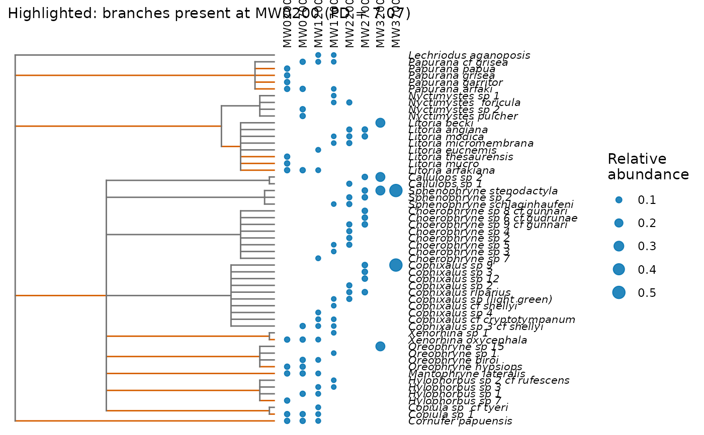

Plot a phylogeny with species abundances and phylogenetic diversity
Source:R/plot-extra.R
plot_phylo.RdDraws a rectangular phylogram of a phylo tree with ggplot2. With
data, a column of dots per site beside the tips shows each species'
relative abundance at that site. With highlight, the branches leading
to the species found at one site are coloured: their summed length is
that site's Faith's phylogenetic diversity (PD; Faith 1992), the
quantity behind q = 0 phylogenetic Hill numbers (Chao et al. 2010).
Usage
plot_phylo(
tree,
data = NULL,
site = site,
species = species,
abundance = NULL,
highlight = NULL,
tip_labels = TRUE,
theme = theme_tidydiversity(grid = "none")
)Arguments
- tree
A rooted tree of class
phylo, for example fromape::read.tree(). Without branch lengths every branch has length 1.- data
Optional data frame of species records by site.
- site, species, abundance
Columns of
data. Withoutabundance, each row counts as one record.- highlight
Optional site whose branches to colour.
- tip_labels
Draw the tip labels (underscores become spaces).
- theme
A ggplot2 theme, by default
theme_tidydiversity().
References
Faith, D. P. (1992). Conservation evaluation and phylogenetic diversity. Biological Conservation, 61, 1-10. doi:10.1016/0006-3207(92)91201-3
Chao, A., Chiu, C.-H. and Jost, L. (2010). Phylogenetic diversity measures based on Hill numbers. Philosophical Transactions of the Royal Society B, 365, 3599-3609. doi:10.1098/rstb.2010.0272
Examples
# A taxonomic tree (family / genus / species) for the Mt Wilhelm frogs
frogs <- png_frogs
frogs$genus <- sub(" .*", "", frogs$scientific_name)
frogs$tip <- gsub(" ", "_", frogs$scientific_name)
tax <- unique(as.data.frame(frogs[c("family", "genus", "tip")]))
tax[] <- lapply(tax, factor)
tree <- ape::compute.brlen(ape::as.phylo(~ family / genus / tip, data = tax))
plot_phylo(tree, frogs, species = tip, highlight = "MW0200")
